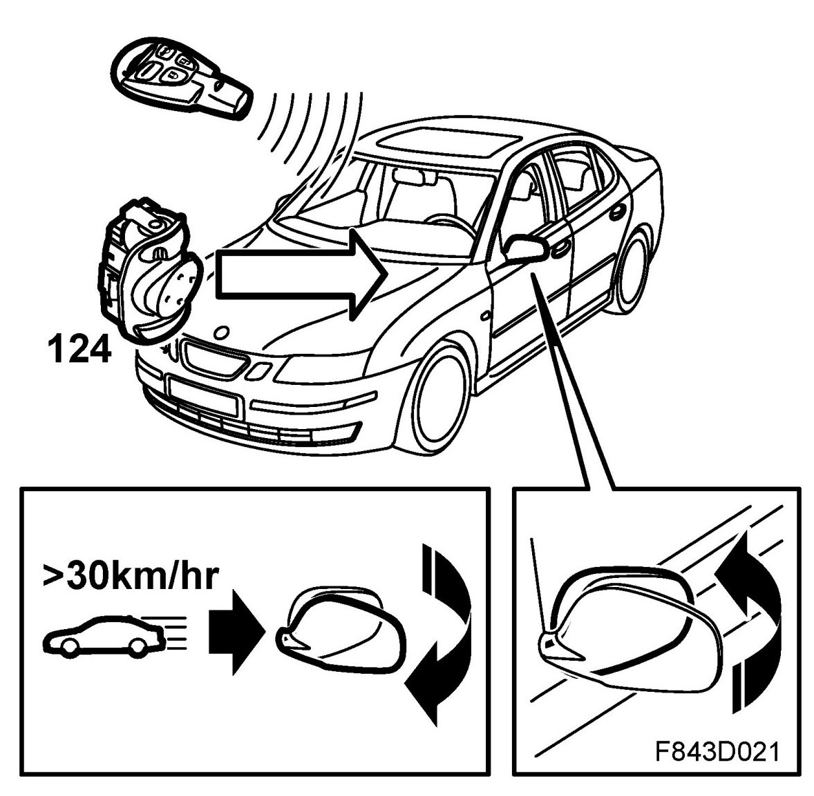

Comfort Function, Detailed Description
Comfort Function, Detailed Description
General
The window lifts, interior lighting, electrically adjustable seats, door mirrors and sunroof can under certain circumstances be operated even when the ignition is not ON. In addition, the ignition switch and door buttons are illuminated and the SID clock and odometer displayed. If the hazard warning lights are on, this is displayed on the MIU. This is known as the comfort function and is controlled by the rear left door module (RLDM). The RLDM collects all the necessary data from the bus and transmits a message for comfort function ON or OFF.
In the key positions ON and ST, the comfort function is not active. Otherwise the loss of RLDM would switch off all connected functions in any key position. The key position is provided by CIM via the bus.

The comfort function is active in the following situations:
Ignition key OFF
With the ignition switch in the OFF position the comfort function is active.
Ignition key in LOCK position or removed
When the key is in the LOCK position or is removed, the comfort function is active for 20 minutes or until the following conditions are met:
- the driver's door is opened or
- the passenger door is opened if someone sat in the seat or
- both front doors are closed if one of them was open.
For 20 seconds if:
- One of the front doors is closed
- They key is removed from the ignition switch
- The remote control is used to unlock the central locking system
- A mirror is adjusted
- A window lift is operated
- A seat with memory is adjusted
- The sunroof is adjusted
See Comfort function, bus information regarding bus information